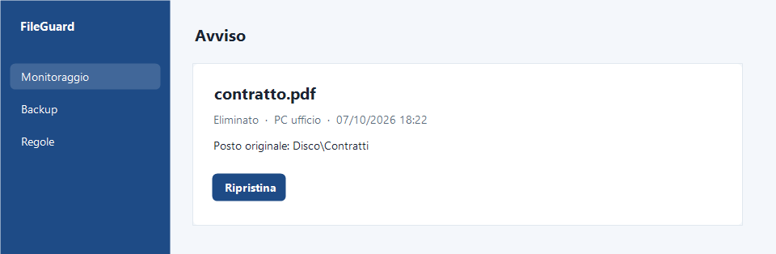
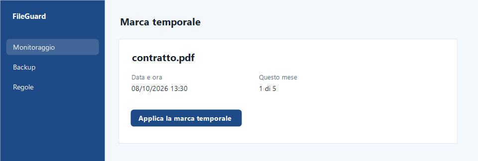

Cosa fa FileGuard
Le funzioni una per una, con le schermate del programma.
Monitoraggio continuo
Cartelle e file restano sotto osservazione. Se un file viene modificato, spostato o eliminato, arriva l'avviso. Vedi da quale computer e dove è finito, anche su un'unità esterna.
Il preventivo di un paziente sparisce dalla cartella: arriva l'avviso.

Avviso e ripristino
La copia del file è già pronta: se è stato un errore, un click lo rimette al posto originale.
"contratto.pdf eliminato dal PC ufficio": premi il pulsante e il file torna al suo posto.

Privacy e GDPR sui file
Trova tutti i documenti di una persona in un periodo, mostra da quanto tempo sono in cartella e ripercorre la storia di ogni file.
Un cliente chiede quali dati conservi su di lui.

Copie e versioni
Le copie restano su disco, server, NAS o cloud che usi già, anche in doppia copia. Ogni modifica lascia una versione: il file in uso resta com'è e la versione scelta viene messa accanto.
Hai salvato sopra il contratto? La versione di ieri è lì accanto.

Marca temporale
Si applica su un singolo documento, fino a 5 al mese. [Semplice o qualificata: da confermare prima di aggiungere altro.]

Installazione
Una procedura guidata, in pochi minuti. Lo stesso account vale su tutti i computer. [Sistemi supportati: da confermare]
Le sei regole
Su ogni cartella accendi fino a sei regole. Ogni regola ti dice che è successo qualcosa; decide chi gestisce la cartella, il programma non cancella da solo.
| Regola | Cosa vedi | Esempio di cartella |
|---|---|---|
| Non si cancella | Arriva l'avviso se un file viene eliminato | Cartelle cliniche |
| Non si modifica | Resta la traccia e arriva l'avviso se un file viene modificato | Contratti firmati |
| Non esce di qui | Vedi dove è finito un file uscito dalla cartella, anche su un'unità esterna | Referti |
| Da dove e dove | Vedi da dove è partito il file, dove si trova adesso e da quale computer | Cartella condivisa della segreteria |
| Deve esserci | Vedi se manca un file che deve stare nella cartella | Fascicolo antiriciclaggio |
| Non si tiene per sempre | Vedi da quanto tempo i file sono nella cartella e se è possibile archiviarli | Documenti di ex clienti |